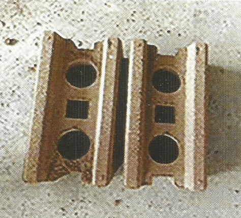
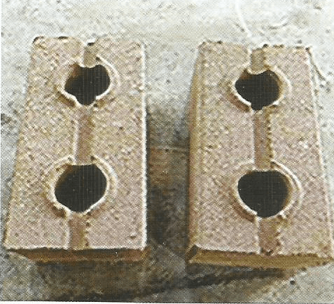
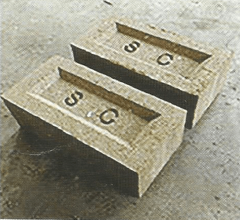

Eco Bricks



Features
• Eco-Friendly
Eco-bricks are an innovative and sustainable building material made by tightly packing plastic
waste into bottles. This process not only diverts plastic from landfills and oceans but also
reduces the need for new building materials, minimizing the environmental impact of
construction. By using eco-bricks, you contribute to a cleaner planet and promote a circular
economy.
• Interlocking Mortar-Less System
Eco-bricks are designed with an interlocking system that eliminates the need for mortar. This
innovative feature allows for easy and quick assembly, providing a stable and secure structure.
The interlocking mechanism ensures precise alignment and enhances the structural integrity of
your construction, making eco-bricks a practical choice for various building projects.
• More Economical and Faster Compared
to Conventional Masonry Construction
Building with eco-bricks is both cost-effective and time-efficient. The straightforward
interlocking design reduces labor costs and accelerates construction timelines. Unlike
traditional masonry, which requires extensive materials and skilled labor, eco-bricks can be
assembled quickly and easily, leading to significant savings on both time and money.
• Reusable
Eco-bricks are designed for flexibility and sustainability. They can be disassembled and reused
in different projects, promoting resource efficiency and reducing waste. This reusability
extends the lifecycle of the materials, making eco-bricks a versatile and environmentally
friendly building option.
• Cheaper Per Square Foot Construction
Using eco-bricks significantly reduces the cost per square foot of construction. The materials
used are often low-cost or free, as they repurpose plastic waste. Additionally, the simplified
construction process lowers labor and material expenses, making eco-bricks an affordable
alternative to conventional building methods.
• Load Bearing Up to 3 Stories
Eco-bricks are engineered to support load-bearing structures up to three stories high. Their
robust and durable design ensures they can handle the weight and stresses of multi-story
buildings. This makes eco-bricks a viable option for a variety of construction projects, from
residential homes to small commercial buildings.
• No Mortar & Plaster Required
Eco-bricks eliminate the need for traditional mortar and plaster, simplifying the construction
process and reducing costs. The interlocking system ensures a tight fit, and the smooth exterior
of the eco-bricks provides a finished look without additional surface treatments. This results
in a clean, polished appearance with minimal effort and expense.